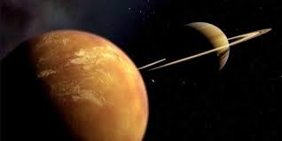

|

Titan (Satürn’ün Uydusu)
Titan, Satürn’ün en büyük uydusudur ve Güneş Sistemi’ndeki en dikkat çekici gök cisimlerinden biridir. 1655 yılında Hollandalı astronom
Christiaan Huygens tarafından keşfedilmiştir. Titan, yalnızca Satürn’ün değil, aynı zamanda Güneş Sistemi’ndeki en büyük ikinci uydudur;
Jüpiter’in uydusu Ganymede’den biraz daha küçüktür, ancak Merkür gezegeninden bile daha büyüktür.
Titan’ı diğer uydulardan ayıran en önemli özelliği kalın atmosferidir. Güneş Sistemi’nde, Dünya dışında yoğun bir atmosfere sahip tek uydu
olma özelliğini taşır. Bu atmosferin büyük kısmı azot gazından oluşur; ayrıca az miktarda metan ve etandan da içerir. Bu gazlar, Titan’ın yüzeyinde
yoğun bir turuncu sis tabakası oluşturarak uydunun yüzeyini doğrudan görmeyi güçleştirir.
Titan’ın yüzeyi son derece soğuktur — sıcaklık ortalama -179°C civarındadır. Bu düşük sıcaklıkta su buz halindedir, ancak metan ve etan sıvı halde
bulunabilir. Bu durum, Titan’da metan döngüsü adı verilen bir süreci ortaya çıkarır. Tıpkı Dünya’daki su döngüsü gibi, Titan’da da metan buharlaşır,
bulut oluşturur, yağmur olarak yağar ve yüzeyde göller, nehirler ve denizler meydana getirir. Bu göller ve denizler, Titan’ı Dünya dışında yüzeyinde
sıvı bulunduran tek gök cismi yapar.
Titan’ın yüzeyinde dağlar, kumullar ve donmuş nehir yatakları bulunur. Bu özellikler, onun jeolojik olarak aktif bir uydu olduğunu gösterir. Titan’ın
buzlu yüzeyinin altında, su ve amonyaktan oluşan bir okyanus tabakasının bulunduğu düşünülmektedir. Bu okyanusun varlığı, Titan’ı yaşam potansiyeli
açısından Europa gibi bilim insanlarının ilgisini çeken bir hedef haline getirmiştir.
2005 yılında Cassini-Huygens görevi kapsamında, Huygens adlı uzay aracı Titan’ın yüzeyine iniş yapmıştır. Bu görev, Titan’ın atmosferi ve yüzeyi
hakkında önemli bilgiler sağlamıştır. Elde edilen görüntüler, Titan’ın yüzeyinin Dünya’daki çöl ve nehir deltalarına benzer bir görünüme sahip olduğunu
göstermiştir.
Sonuç olarak Titan, hem kalın atmosferi hem de sıvı metan ve etan gölleriyle Güneş Sistemi’nde benzersiz bir dünyadır. Aşırı soğuk olmasına rağmen
kimyasal açıdan aktif yapısı, yaşamın çok farklı koşullarda bile var olabileceğine dair önemli ipuçları sunmaktadır. Titan, bilim dünyası için “Dünya’ya
en çok benzeyen yabancı dünya” olarak tanımlanabilecek kadar özel bir uydudur.
|